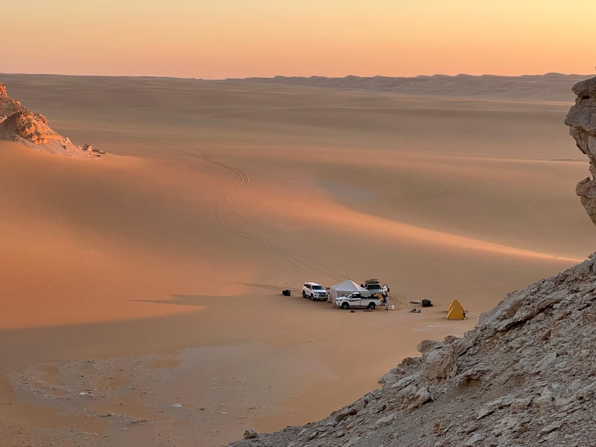

Asíse hizo
Un homenaje a las personas que construyeron Sand Gate Camp: a mano, con tierra, desde 2009, en el pequeño oasis de Abu Monkar.
Un caravasarmoderno
La construcción empezó en 2009 en Abu Monkar, un pequeño oasis del Desierto Occidental de Egipto. La idea era un caravasar moderno: un lugar de descanso para los viajeros entre Farafra y Dajla, y una puerta al Gran Mar de Arena.
Se levantó siguiendo los métodos de construcción con tierra del arquitecto egipcio Hassan Fathy, adaptados al clima y al terreno del lugar: muros gruesos, bóvedas y cúpulas que mantienen fresco el interior sin máquinas.
Mirael vídeo
 Ver en YouTube
Ver en YouTubeTierra, palmeray paciencia
Lo que hace que el campamento funcione en el desierto.
El método de Hassan Fathy
Arquitectura de tierra pensada para la gente y el clima de Egipto.
Hecho para el calor
Muros gruesos y patios en sombra que conservan el fresco de la noche.
Manos locales
Levantado por la gente del oasis, con materiales del lugar.

Ven a verloen pie.
No hay reservas automáticas: cada expedición se prepara a medida. Cuéntanos fechas, número de viajeros y cómo te gusta viajar, y te respondemos personalmente con disponibilidad y presupuesto.